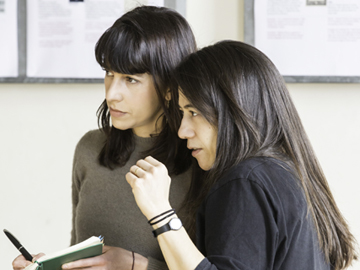
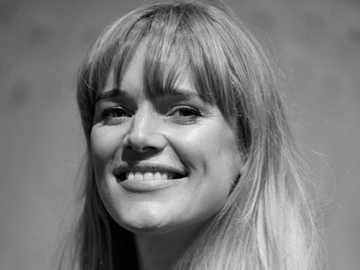
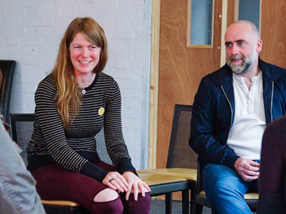
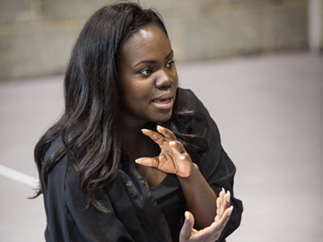

Young People
‘THE YOUNG VIC ALLOWS ME TO EXPRESS
MY FEELINGS IN A DIFFERENT WAY’
Joshua, participant in Parallel Macbeth
Annual Review
PATRICK McKENNA
For 15 years we have nurtured the talent of dozens of the UK’s most exciting directors. Over the past few years, three directors in particular have benefitted from being appointed as Genesis Fellows – full time members of staff who not only direct shows on our stages, but learn from the skills of others in the building and begin to train the next generation of talent.
2015-16 was a showcase of the superb Carrie Cracknell, Joe Hill-Gibbins and Natalie Abrahami. First Natalie’s critically acclaimed production of Happy Days returned to the main house, enrapturing audiences for a second time. Later in the year, Joe’s virtuoso production of Measure for Measure broke new ground for one of Shakespeare’s most difficult plays. Finally, Carrie Cracknell’s Macbeth, a fascinating blend of dance and theatre, opened at the Young Vic before touring to Birmingham and Manchester. All three played to full houses and all three have ensured that these directors will be some of the most sought after in the country for years to come.
These shows also showcased the talent of some of the finest British female actresses of their generation – Juliet Stevenson, Romala Garai and Anna Maxwell Martin. Much of our work this year has been generated by exceptional women. In the Maria, huge hits A Number, La Musica, Bull and A Girl is Half Formed Thing were all written or directed by women. All our Taking Part shows this year, professionally resourced productions created by and featuring members of our local community, were directed or co-directed by women.
In this respect, as in many others, the Young Vic is industry leading, which is what makes it such an exciting place to be.
DAVID LAN
We still talk about the redesigned, redeveloped, rebuilt part of our theatre as ‘new’ – at least I do. But in fact it’s now 10 years old. So we’re all – or at least all of us who have been on this part of a longer journey – now 10 years older. How do we grow up but still stay young?
We have two simple ideas which seem to do the trick. The first is that we go on, year in year out, producing the shows that we don’t know how to do, pushing the boat out, flying a kite, taking leaps in the dark – whatever your favourite metaphor is. In theatre you live or die by the artistic success of the show you happen to have on at that moment. We’ve got used to living (reasonably) dangerously.
Each show we produce – and we’re still producing somewhere between 12 and 15 new shows each year – is designed to be a new adventure for the artists, encouraged to try the crazy thing they’ve never attempted before, and for the whole YV team who are primed to create, to support, to advise, to cheer on…
And the second: we try to stay connected to the real world that exists beyond The Cut in Waterloo. This last year we’ve been especially engaged by the turmoil in Europe caused by the massive movement of refugees across the continent. ‘What can we do?’, is everyone’s question. So much of the year was taken up exploring new relationships and planning our season Horizons which will play out over the next 18 months, involving writers, directors, actors – professional and non-professional – who are directly or indirectly engaged with this new long term reality. More shows will be added over future months.
Staying alive to new ways of making theatre, to new people to make it with, to new ways of living through art in the real world is key to our ability to stay young.
So it’s 10 years since we reopened our rejuvenated theatre but we feel younger than ever, with an infinite amount ahead of us to learn, to share, to enjoy.
Lucy Woollatt
Over the course of a year shows open and close, staff move on, projects come to their end. So often at these moments, the support we give each other is thanked with tears and heartfelt words about the Young Vic ‘family’.
Each time a true feeling of achievement and joy rises through us. A confirmation of that sense that there’s nowhere quite like the Young Vic to put on a show.
This feeling is difficult to maintain, it involves caring in an order that is sometimes counter intuitive, working more hours that seem sensible, spending more time in groups when a single decision would seem quicker, or simply taking risks in those we employ and the shows we programme. However, our success – financial, critical, artistic – depends on it. Our recent trip to New York with A Streetcar Named Desire was only possible because of it. Our full season of work, 25 shows across our three stages, on tour and on transfer is testament to it.
Production Highlights
Artists
We invite our artists to attempt with us what they’ve never attempted before, to take a leap in the dark.
ZOË SVENDSEN
DIRECTED AND DESIGNED WORLD FACTORY
Award winning director, translator and researcher, Zoë explored contemporary consumer capitalism through World Factory’s interactive game-performance.
NATALIE ABRAHAMI
DIRECTED AH WILDERNESS!
Director of five-star hit Happy Days, Genesis Fellow and Young Vic Associate Director Natalie ‘beautifully captured the ludicrousness of youth’ in this revival of Eugene O’Neill’s play.
RICHARD JONES
DIRECTED THE TRIAL
Olivier Award-winner director, Richard Jones directed this classic, timeless tale of ordinary terror by Franz Kafka.
RORY KINNEAR
PLAYED JOSEF K IN THE TRIAL
Olivier Award-winning British actor, Rory was ‘at the peak of his powers’ playing the mesmerising role of Josef K as he slowly descended into a waking nightmare of humiliations.
HUGH SKINNER
PLAYED KYLE / BLOCK IN THE TRIAL
Hugh Skinner returned to the Young Vic for The Trial after previous roles in A Cherry Orchard and Señora Carrar's Rifles.
IVO VAN HOVE
DIRECTED SONG FROM FAR AWAY
Following the multi-award winning A View from the Bridge, Ivo produced a ‘dreamlike and deeply unsettling’ production of Simon Stone’s first original work at the Young Vic.
NATALIA KOLIADA
CO-FOUNDER BFT, STAGING A REVOLUTION
Natalia Koliada, co-founder of the astounding Belarus Free Theatre, celebrated BFT’s 10th anniversary with this epic festival held at multiple venues across London.
JOE HILL-GIBBINS
DIRECTED MEASURE FOR MEASURE
Artistic Associate of the Young Vic, Joe tackled Shakespeare’s dark comedy in his peerless bold style.
ROMOLA GARAI
PLAYED ISABELA IN MEASURE FOR MEASURE
Golden Globe Nominee, Romola was ‘in wonderfully impassioned form’ when she played the role of Isabela in Shakespeare’s dark comedy.
LIZ STEVENSON
DIRECTED BARBARIANS
2015 JMK Award Winner Liz Stevenson directed Barbarians which was nominated for an Olivier Award for ‘Outstanding Achievement in an Affiliate Theatre’.
CARRIE CRACKNELL & LUCY GUERIN
CO-DIRECTED MACBETH
Carrie & Lucy brought continues their collaboration at the Young Vic with actors and dancers forming a new, ‘viscerally exciting production’ of Shakespeare’s supernatural tragedy.
LIZZIE CLACHAN
DESIGNED MACBETH
Lizzie Clachan returned to the Young Vic after designing the set for the incredible performance of A Season In the Congo.
JOHN HEFFERNAN
PLAYED MACBETH
John Heffernan made his Young Vic debut in the title role of Macbeth with a ‘luminously intelligent performance’.
ANNA MAXWELL MARTIN
PLAYED LADY MACBETH
BAFTA award winning Anna Maxwell Martin played an ‘alarmingly cool, svelte Lady Macbeth’ in this new version of Shakespeare’s supernatural tragedy.
CLARE LIZZIMORE
DIRECTED BULL
Clare Lizziemore directed the return of the Olivier award winning piece one year after Bull’s office politics and playground bullying was first in the Maria.
PETER BROOK AND MARIE-HÉLÈNE ESTIENNE
DIRECTED BATTLEFIELD
Following their ‘spellbinding’ play The Valley Of Astonishment, Peter Brook and Marie-Hélène Estienne directed this ‘dazzling piece of theatre’.
ANNIE RYAN
ADAPTED & DIRECTED A GIRL IS A HALF-FORMED THING
Director and performer Annie Ryan brought Eimear McBride’s acclaimed novel, ‘a fearless, unflinching portrait of one girl’s turbulent journey into an adult world’ to The Maria.
AOIFE DUFFIN
PLAYED XX IN A GIRL IS A HALF-FORMED THING
Duffin takes on the role of an unnamed girl in Annie Ryans’ courageously feminist one woman masterpiece.
ALETTA COLLINS
CHOREOGRAPHED AND DIRECTED IF YOU KISS ME, KISS ME
Aletta conceived If You Kiss Me Kiss Me with Jane Horrocks to bring this gorgeously evocative music theatre to life through her choreography and direction.
BUNNY CHRISTIE
DESIGNED IF YOU KISS ME, KISS ME
The three times Olivier Award winning set and costume designer creates the set for this dance-gig-theatre blend.
JANE HORROCKS
STARRED IN IF YOU KISS ME, KISS ME
Jane Horrocks is an award winning British actor and singer. Jane also co-conceived this extraordinary part gig, part dance piece.
Tours
In 2013-15 The Events, My Perfect Mind, The Valley of Astonishment, Oh My Sweet Land, Kafka’s Monkey, The Secret Agent, Trash Cuisine were seen in locations including…
Belfast, Connecticut, Ohio, Pennsylvania, New York, Barcelona, Bremen, Tokyo, Arras, Luxembourg, Piraeus, Paris, Chennai, Birmingham, Liverpool, Bristol, Deptford, Plymouth, Southampton, Edinburgh, Glasgow, Vienna, Drammen, Amsterdam, Shanghai.
Taking Part
Our work with young people and our local communities is a major part of our artistic life. At a deep level, it complements and enhances each of the shows we produce.
All of this work is created by our Taking Part team, who engage with over 10,000 people a year. We offer young people and our neighbours free tickets to all our shows. We run a wide range of projects, from skills based workshops to a chance to perform on one of our stages. We connect with some of the most vulnerable groups in society such as young people with mental health difficulties, children and adults with special needs, homeless people and people in recovery.
Much of our work this year has been with refugees and asylum seekers, living on our doorstep. Whilst the refugee crisis around the world worsens, we are doing what we can do best – making relationships with our neighbours, opening conversations with artists and our audiences, and creating work for our stages. We are learning about our world, and how different one person’s experience can be from another’s, even though we all walk the same streets and live in the same city. David Lan said of all work with and about refugees at the Young Vic; ‘This is the Young Vic’s response to the world as it is now. People in distress need help and they need to be heard. We want to provide a powerful means for audiences at home and abroad to connect with the political, social and human realities refugees face. These are the central stories of our age.’
Jeremy Corbyn said when outlining his vision for the arts; ‘Following the lead of successful programmes, such as those run by The Young Vic and the Hallé Orchestra in Manchester, we must support outreach programmes designed to involve young people both as participants and as audience members.’
We think of the Young Vic as ‘the home you didn’t know you had’. Taking Part is one of the ways in which we keep our doors wide open.
HIGHLIGHTS OF THE YEAR IN NUMBERS 2015-16
We gave 9,259 free tickets
to young people, schools
and our neighbours.
Worked with 2,696 YOUNG PEOPLE, THROUGH SEEING SHOWS, WORKSHOPS AND BEING IN PRODUCTIONS
PROVIDED 18 WORKSHOPS FOR SCHOOLS, 16 IN SCHOOL AND 2 ON THE YOUNG VIC STAGE
DEVELOPED A CPD PROGRAMME FOR TEACHERS. PROVIDED 5 WORKSHOPS ATTENDED BY 53 TEACHERS
WORKED WITH 127 REFUGEES AND ASYLUM SEEKERS ACROSS TAKING PART WORKSHOPS AND PROJECTS.
Young People
‘THE YOUNG VIC ALLOWS ME TO EXPRESS
MY FEELINGS IN A DIFFERENT WAY’
Joshua, participant in Parallel Macbeth
NOW IS THE TIME TO SAY NOTHING, CREATED WITH 10 YOUNG PEOPLE AND A SYRIAN FILMMAKER WAS PRESENTED AS PART OF THE SHUBBAK FESTIVAL AND THE EDINBURGH FRINGE
RAN A PROJECT FOR TEENAGERS WITH MENTAL HEALTH DIFFICULTIES, ASSISTED BY TWO YOUNG PEOPLE WHO HAD PREVIOUSLY TAKEN PART IN THIS PROJECT
YOUNG VIC YOUNG ASSOCIATES CREATED HUMAN ME WITH 9 LOCAL YOUNG PEOPLE IN RESPONSE TO THE REFUGEE CRISIS
ORGANISED BEYOND BORDERS, A CONFERENCE FOR 120 ARTISTS AND THEATRE MAKERS ABOUT HOW THEATRE CAN MAKE WORK WITH REFUGEES
TWO BOROUGHS
‘I'M NOT ABLE TO WORK AND AM ON E.S.A.
AND I COULDN'T AFFORD TO BUY TICKETS
FOR THE THEATRE, AND YOUR SCHEME
MAKES SUCH A BIG DIFFERENCE’
Angie, participant
CREATED A BRAND NEW PLAY WITH 10 LOCAL RESIDENTS OVER 60. IN RESPONSE TO LA MUSICA, ROOM 504 WAS PERFORMED AT THE HAMPTONS BY HILTON, WATERLOO
WORKED WITH A COMMUNITY CHORUS OF 25 PEOPLE, WHO PERFORMED IN THE YOUNG VIC PRODUCTION OF THE TRIAL
WORKED WITH OVER 65 REFUGEES AND ASYLUM SEEKERS, THROUGH WORKSHOPS, SEEING SHOWS AND DEVELOPING NOW WE ARE HERE, WHICH WILL BE PERFORMED IN 2016
WORKED WITH 48 SEX WORKERS TO CREATE THE BROLLY PROJECT, A COMMUNITY SHOW BY AND ABOUT THE PARTICIPANTS
DIRECTORS PROGRAM
Launched in 2000, our Directors Program is the only scheme of its kind in the UK. Throughout 2015-16 we offered 349 activities, with over 1,700 places for emerging directors, from assistant directorships to skills-based workshops to CV clinics – all to help directors develop their craft.
Genesis Fellow
Natalie Abrahami. Photo by Johan Persson
The Genesis Fellow is a two year role that enables its recipients to work closely with artistic director David Lan as they continue to develop their craft as a theatre director. Each year they also have the opportunity to direct their own show either in the Maria Theatre or Main House.
Natalie Abrahami
Ah, Wilderness! by Eugene O’Neil
GBLOAHAN OBESISAN
Cuttin’ It by Charlene James
GENESIS FUTURE DIRECTORS AWARD
Tinuke Craig. Photo by David O'Quigley
The Genesis Future Directors Award enables two emerging directors to rehearse and present a play of their choice, as part of the Young Vic’s season.
RIKKI HENRY
directed Creditors by August Strindberg in a version by David Greig
OLA INCE
Directed Dutchman by Amiri Baraka
Genesis Network supported by the Genesis Foundation
Our web-based network helps directors to discuss theatre, form groups and organise skills sharing, as well as to find information about current activities, opportunities and special ticket offers. Directing can be lonely – particularly in the early stages of a career – and the network encourages a sense of community and peer support. We now have nearly 1,000 members.
These schemes are generously supported by Genesis Foundation
JMK Award
Each year the JMK Award enables a young director to stage their production of a classic, hosted in our Clare theatre.
LIZ STEVENSON
Barbarians by Barry Keeffe
JERWOOD ASSISTANT DIRECTORS SCHEME
‘The Jerwood Assistant Directorship has allowed me the opportunity to make new work, to be challenged, take risks, learn from others and be part of a brilliant organisation with talented people. It has been a brilliant opportunity for me to learn and grow as a director and I feel very thankful for the opportunity.’
Rachel Lincoln – La Musica – Jeff James
Anna Girvan
Learning from experienced directors by assisting and spending sustained time in a theatre are vital for a director’s development. Each year the Jerwood Charitable Foundation supports us in providing assistant directorships which include a residency at the Young Vic, an attachment to a production, an international trip to see work and meet artists and the opportunity to develop and direct a short play with a writer.
Jerwood Assistant Directors:
RACHEL LINCOLN
La Musica - Jeff James
JASMINE WOODCOCK-STEWART
Measure for Measure - Joe Hill-Gibbins
FINN DEN HERTOG
Macbeth - Carrie Cracknell and Lucy Guerin
JOE HANCOCK
If You Kiss Me, Kiss Me - Aletta Collins
MICHAL KEYAMO
Blue/Orange (2014) - Matthew Xia
This scheme is generously supported by Jerwood Chartable Foundation
BORIS KARLOFF TRAINEE ASSISTANT DIRECTORS SCHEME
‘The Boris Karloff Trainee Assistant Director Scheme gave me the formal introduction into what it takes to make brilliant work in a brilliant theatre. I can only hope with this under my belt I can further my involvement in creating stimulating, thought- provoking and dream evoking work.’
Rob Awosusi - The Trial - Richard Jones
With the support of the Boris Karloff Charitable Foundation we seek to diversify our talent pool and find the most exciting talent. The scheme bridges the gap between training or engaging with our Taking Part department and embarking on a professional career. Many of the participants have not been through formal higher education and are from black, Asian and ethnic minority communities.
Boris Karloff Trainee Assistant Directors:
ROB AWOSUSI
The Trial - Richard Jones
Andrea Ling
Measure for Measure - Joe Hill-Gibbins
MICHAL KEYAMO
Macbeth - Carrie Cracknell and Lucy Guerin
Highlights
Finances
Our Shows
The teams who create, produce, manage, build and sell our shows are talented and highly motivated. Our actors, writers, directors and designers are among the best in the world.
Producing our ambitious and innovative work is expensive and involves risk. Each risk we take is calculated and strategic, designed to produce long term benefit to ourselves as well as to the wider artistic world. Each show needs to work in its own right and, at the same time, R&D for the shows that come after. In other words, we respond to existing markets but also create new ones. The cost of this approach, sustained over time (we produce up to 18 shows per year with 5 or more additional shows with the community) cannot be met by ticket sales alone.
From 2013-16 our ticket prices ranged from £10 to £35 with a range of concessions available. At least 50% of the audience at each performance pay less than £20.
As we play to consistently full houses, the only way we can increase box office income is by raising prices, by abandoning concessions or by withdrawing our funded ticket schemes. For reasons outlined throughout the review, to take any of these steps would damage the benign circle “great art, low prices, diverse audience” that we have imagined, created, and sustained over the past decade.
Consequently, the balance of finance each show and each season requires can only be sought from further government investment or by raising our fundraising target to ever higher levels.
We are now celebrated as ‘one of Britain’s great producing theatres’ The Independent 2011. In these difficult times, without persistent and imaginative fundraising, the artistic and social value we so successfully create will be threatened.

EXPENDITURE
Each year more than 90% of our total resource goes towards the shows you see on our three stages, our ‘taking part’ activities and our flagship directors programme. Less than 10% is spent on overheads.
Of the 90%, one quarter goes on the salaries of our permanent staff – producers, heads of lighting, sound and stage, marketeers, production accountants and theatre managers. The other three quarters goes on the direct costs of our productions – the actors, the director, the designer, the set and costumes and so on.
YOUNG VIC PRODUCTIONS
& ACTIVITIES 90%
OVERHEADS 10%

INCOME
Our income comes from the sale of our tickets, our fundraising, our co producers and our grant from the Arts Council England. Our grant makes up less than a third of our income. We generate the other two thirds by the careful marketing and pricing of our tickets and by regular and close engagement with the co-producers, individuals, trusts and corporates that support us. Each year we raise well over £1.25m million in this way and, in addition, raise substantial sums, sometimes up to £1m, by co-producing with other theatres in the UK and abroad.
BOX OFFICE YOUNG VIC 29%
GRANT 31%
DEVO 25%
BOX OFFICE 32%
CO-PRODUCTION 5%
TRADING 4%
OTHER 2%
Current Supporters
The Young Vic is generously supported by
Funders
Corporate Supporters
‘MARKIT IS A HUGE SUPPORTER OF THE YOUNG VIC’S WORK IN MAKING THEATRE AVAILABLE TO ALL. THE FUNDED TICKET SCHEME, WHICH GIVES AWAY 10% OF ALL YOUNG VIC TICKETS, HAS AN ENORMOUS POSITIVE IMPACT ON LOCAL COMMUNITIES AND OPENS DOORS TO NEW EXPERIENCES AND OPPORTUNITIES.’
Markit
Trust Supporters
‘I’M PROUD OF WHAT WE’VE DEVELOPED WITH THE YOUNG VIC. IT SHOWS THE VALUE OF SUSTAINED GIVING ON A PARTNERSHIP LEVEL. THE YOUNG VIC UNDERSTANDS THE GENESIS FOUNDATION, WHAT IT MEANS TO BE A REAL PARTNER AND IT HAS REALLY DELIVERED INNOVATIVE PROGRAMMES WITH US.’
John Studzinski, Genesis Foundation
Individual Supporters
‘BEING A MEMBER OF THE YOUNG VIC’S ‘UPPER CIRCLE’ HAS GIVEN ME A BEHIND THE SCENES LOOK AT THE EXCEPTIONAL WORK DONE ON STAGE AND IN THE COMMUNITY. I AM PROUD TO BELONG TO A THEATRE THAT IS PASSIONATE ABOUT THEIR WORK AND COMMITTED TO SUPPORTING THE NEXT GENERATION OF ARTISTS.’
Soul Mate